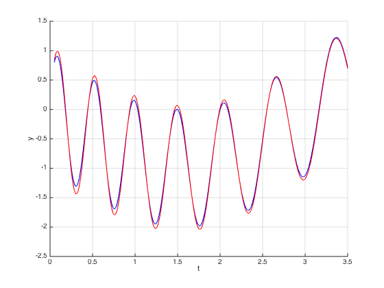
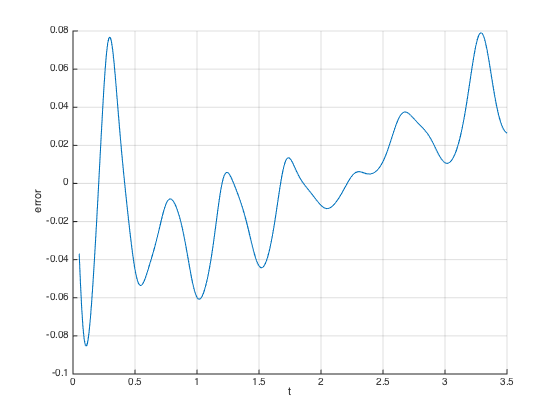
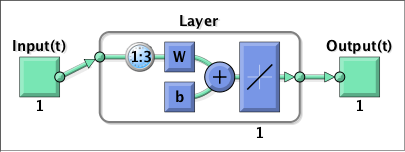
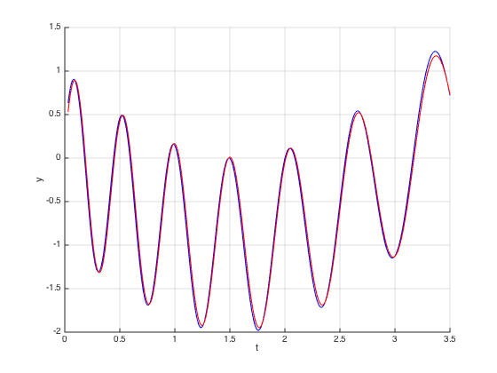
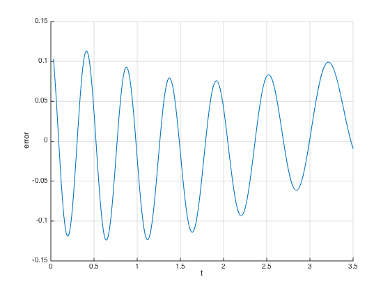
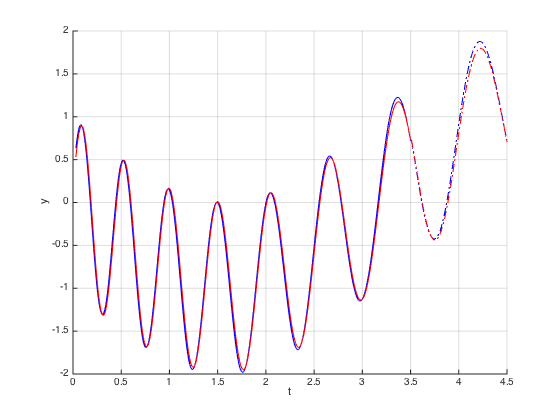
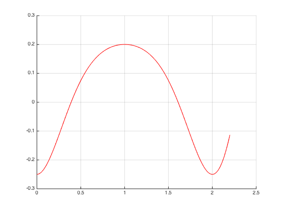
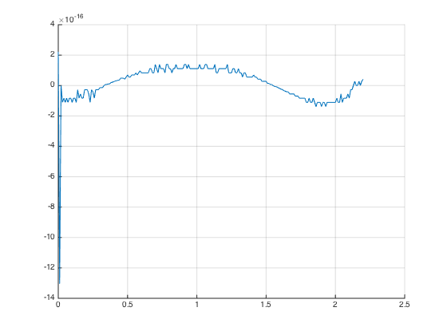

Contents
PART 1
clear;
clc;
t0 = 0;
tn = 3.5;
dt = 0.01;
func = @(t) sin(t .^ 2 - 15 * t + 3) - sin(t);
x = func(t0 : dt : tn);
y = func(t0 + dt : dt : tn + dt);
xseq = con2seq(x);
yseq = con2seq(y);
delays = 1 : 5;
lr = 0.01;
net = newlin(xseq, yseq, delays, lr);
view(net);
learn_func = net.inputWeights{1, 1}.learnFcn
performance_func = net.performFcn
learn_func =
learnwh
performance_func =
mse
net.inputWeights{1, 1}.initFcn = 'rands';
net.biases{1}.initFcn = 'rands';
net = init(net);
[Xs, Xi, ~, Ts] = preparets(net, xseq, yseq);
adapt_cycles = 50;
for i = 1 : adapt_cycles
[net, Y, E] = adapt(net, Xs, Ts, Xi);
Y = net(Xs, Xi);
perf = perform(net, Ts, Y);
fprintf('sqrt(perf) = %f\n', sqrt(perf));
end
sqrt(perf) = 0.125472
sqrt(perf) = 0.060903
sqrt(perf) = 0.056426
sqrt(perf) = 0.055869
sqrt(perf) = 0.055783
sqrt(perf) = 0.055798
sqrt(perf) = 0.055845
sqrt(perf) = 0.055902
sqrt(perf) = 0.055958
sqrt(perf) = 0.056009
sqrt(perf) = 0.056052
sqrt(perf) = 0.056087
sqrt(perf) = 0.056114
sqrt(perf) = 0.056134
sqrt(perf) = 0.056148
sqrt(perf) = 0.056157
sqrt(perf) = 0.056161
sqrt(perf) = 0.056162
sqrt(perf) = 0.056159
sqrt(perf) = 0.056154
sqrt(perf) = 0.056147
sqrt(perf) = 0.056139
sqrt(perf) = 0.056129
sqrt(perf) = 0.056118
sqrt(perf) = 0.056106
sqrt(perf) = 0.056094
sqrt(perf) = 0.056081
sqrt(perf) = 0.056067
sqrt(perf) = 0.056054
sqrt(perf) = 0.056040
sqrt(perf) = 0.056025
sqrt(perf) = 0.056011
sqrt(perf) = 0.055996
sqrt(perf) = 0.055981
sqrt(perf) = 0.055966
sqrt(perf) = 0.055952
sqrt(perf) = 0.055937
sqrt(perf) = 0.055921
sqrt(perf) = 0.055906
sqrt(perf) = 0.055891
sqrt(perf) = 0.055876
sqrt(perf) = 0.055861
sqrt(perf) = 0.055846
sqrt(perf) = 0.055831
sqrt(perf) = 0.055816
sqrt(perf) = 0.055801
sqrt(perf) = 0.055785
sqrt(perf) = 0.055770
sqrt(perf) = 0.055755
sqrt(perf) = 0.055740
figure;
hold on;
grid on;
plot(t0 + 5 * dt : dt : tn, cell2mat(Ts), '-b');
plot(t0 + 5 * dt : dt : tn, cell2mat(Y), '-r');
xlabel('t');
ylabel('y');
figure;
hold on;
grid on;
plot(t0 + 5 * dt : dt : tn, cell2mat(E));
xlabel('t');
ylabel('error');
 
PART 2
delays = 1 : 3;
lr = maxlinlr(x, 'bias');
net = newlin(xseq, yseq, delays, lr);
net = configure(net, xseq, yseq);
view(net);
net.inputWeights{1,1}.initFcn = 'rands';
net.biases{1}.initFcn = 'rands';
net = init(net);
net.trainParam.epochs = 600;
net.trainParam.goal = 1.0e-6;
[Xs,Xi,Ai,Ts] = preparets(net, xseq, yseq);
net.trainFcn = 'trains';
[net,tr] = train(net, Xs, Ts, Xi, Ai);
[Y,Pf,Af,E,perf] = sim(net, Xs, Xi, Ai, Ts);
display(sqrt(perf));
ans =
0.0696

figure;
hold on;
grid on;
plot(t0 + 3 * dt : dt : tn, cell2mat(Ts), '-b');
plot(t0 + 3 * dt : dt : tn, cell2mat(Y), '-r');
xlabel('t');
ylabel('y');

figure;
hold on;
grid on;
plot(t0 + 3 * dt : dt : tn, cell2mat(E));
xlabel('t');
ylabel('error');

steps = 100;
xt = func(tn - 3 * dt : dt : tn + (steps - 1) * dt);
yt = func(tn - 2 * dt : dt : tn + steps * dt);
xtseq = con2seq(xt);
ytseq = con2seq(yt);
[Xst,Xit,Ait,Tst] = preparets(net, xtseq, ytseq);
[Yt,Pft,Aft,Et,perft] = sim(net, Xst, Xit, Ait, Tst);
display(sqrt(perft))
ans =
0.0658
figure;
hold on;
grid on;
plot(t0 + 3 * dt : dt : tn, cell2mat(Ts), '-b');
plot(t0 + 3 * dt : dt : tn, cell2mat(Y), '-r');
plot(tn + dt : dt : tn + steps * dt, cell2mat(Tst), '-.b');
plot(tn + dt : dt : tn + steps * dt, cell2mat(Yt), '-.r');
xlabel('t');
ylabel('y');

PART 3
t0 = 0;
tn = 2.2;
dt = 0.01;
func1 = @(t) cos(2.5 .* (t .^ 2) - 5 * t);
func2 = @(t) cos(2.5 .* (t .^ 2) - 5 * t + pi) / 4;
x = func1(t0 : dt : tn);
y = func2(t0 : dt : tn);
D = 4;
Q = numel(t0 : dt : tn);
p = zeros(D, Q);
for i = 1 : D
p(i, i : Q) = x(1 : (Q - i + 1));
end
net = newlind(p, y);
Y = net(p);
display(sqrt(mse(Y - y)));
figure;
hold on;
grid on;
plot(t0:dt:tn, y, '-b');
plot(t0:dt:tn, Y, '-r');
figure;
hold on;
grid on;
plot(t0:dt:tn, Y - y);
ans =
1.2310e-16
 